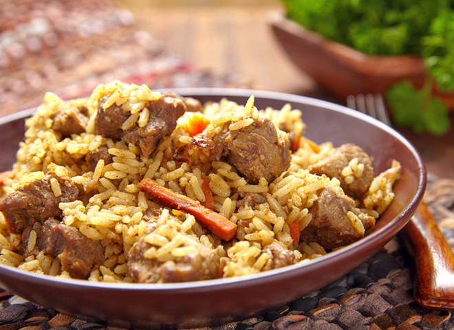
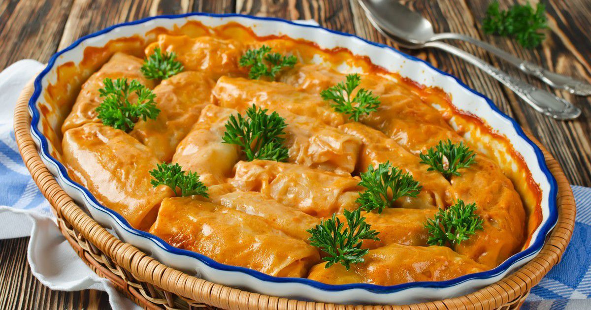

Мої улюблені страви
Плов зі свинини

Інградієнти
- 300 г свинячого ошийка,
- 200 г рису,
- 150 г моркви,
- 150 г цибулі,
- 3 зубки часнику,
- 50 мл олії,
- 2 ч. ложки барбарису,
- 2 лаврових листа,
- щіпка меленого коріандру,
- червоний мелений перець за смаком,
- чорний мелений перець за смаком,
- сіль за смаком.
Приготування
- Моркву почисти і натри на крупну тертку або наріж тонкою соломкою. Цибулю почисти і поріж середньо. Подрібни часник.
- М'ясо оброби і наріж невеликими кубиками.
- У добре розігрітий сотейник налий олію. Виклади в олію свинину і обсмаж її на сильному вогні, перевертаючи, 7-10 хвилин до рум'яної скоринки.
- Додай до м'яса цибулю і обсмаж 3 хвилини, потім додай моркву і ще трохи обсмаж.
- Додай у плов часник, всі спеції, посоли. Перемішай і залий окропом, щоб вода покрила м'ясо. Доведи до кипіння, зменш вогонь і готуй 10 хвилин.
- Рис ретельно помий і акуратно виклади на м'ясо, не перемішуючи.
- Залий плов водою, щоб вона покривала рис на 2 см. Доведи до кипіння і вари плов до випаровування рідини. Потім проткни рис у декількох місцях, накрий кришкою і томи плов на слабкому вогні приблизно 20 хвилин.
- Готовий плов зі свинини ретельно перемішай і подавай гарячим.
Голубці

Інградієнти
- вода для фаршу — 120 мілілітрів;
- білокачанна капуста — 1,2 кілограма;
- рослинна олія — 100 мілілітрів;
- вода (окріп!) для рису — 150 мілілітрів;
- рис — 150 грамів;
- подрібнена петрушка — 3 столові ложки;
- цибулина — 1 штука;
- яловичина (м'якоть) — 600 грамів;
- сіль — 1 чайна ложка;
- мелений чорний перець — 0,5 чайної ложки.
Соус
- сіль — 2 чайні ложки;
- сметана — 200 грамів;
- вода — 700 мілілітрів;
- томатна паста — 200 грамів;
- борошно — 2 столові ложки;
- цукор — 3 чайні ложки;
- мелений чорний перець — 0,5 чайної ложки.
Приготування
- Для початку приготуємо рис: його потрібно висипати в каструлю, залити киплячою водою, накрити кришкою і хвилин десять варити на дуже маленькому вогні. Потім залишити остигати під кришкою.
- Далі беремо цибулю, очищаємо її від шкірки та нарізаємо дрібними кубиками. Нарізану цибулю обсмажуємо до прозорості на сковороді з рослинною олією.
- З білокачанної капусти необхідно зняти верхні листки та гострим ножем видалити качан.
- У велику каструлю кладемо підготовлену капусту, заливаємо окропом, накриваємо кришкою і варимо, при постійному кипінні, приблизно хвилин п'ятнадцять: до напівготовності.
- Потім кладемо капусту на друшляк і даємо час стекти воді.
- Підготуємо м'ясо: його потрібно два рази пропустити через м'ясорубку з дрібною решіткою.
- Підготуємо петрушку: її треба промити, обсушити й подрібнити за допомогою ножа.
- Додаємо у фарш воду, подрібнену петрушку, відварений рис, сіль, чорний мелений перець, підсмажену цибулю і все ретельно перемішуємо. Фарш готовий.
- Відварену до напівготовності капусту необхідно розібрати на окремі листки, черешки листя потрібно злегка відбити.
- Переходимо до формування голубців. На листок капусти кладемо фарш і загортаємо його всередину.
- Потім голубці паніруємо в борошні й обсмажуємо на сковороді з рослинною олією з обох сторін.
- Обсмажені голубці потрібно скласти на деко з високими бортиками.
- Готуємо соус. У суху сковороду насипати борошно, підсушуємо на маленькому вогні, постійно перемішуємо: до появи приємного горіхового запаху.
- В іншій сковороді, при постійному перемішуванні, підігріваємо сметану, зменшуємо вогонь, додаємо томатну пасту та інтенсивно перемішуємо до однорідності.
- В однорідну масу, при постійному перемішуванні, додаємо підсушене борошно, воду, сіль, цукор, чорний мелений перець, збільшуємо вогонь і доводимо до кипіння.
- Кількість води та спецій можете регулювати самостійно.
- Далі необхідно залити соусом голубці та відправити в розігріту до 180-200 градусів духовку на тридцять хвилин.
- Готові голубці викладаємо на тарілку, посипаємо подрібненою зеленню.